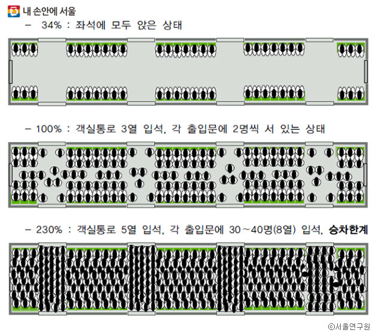
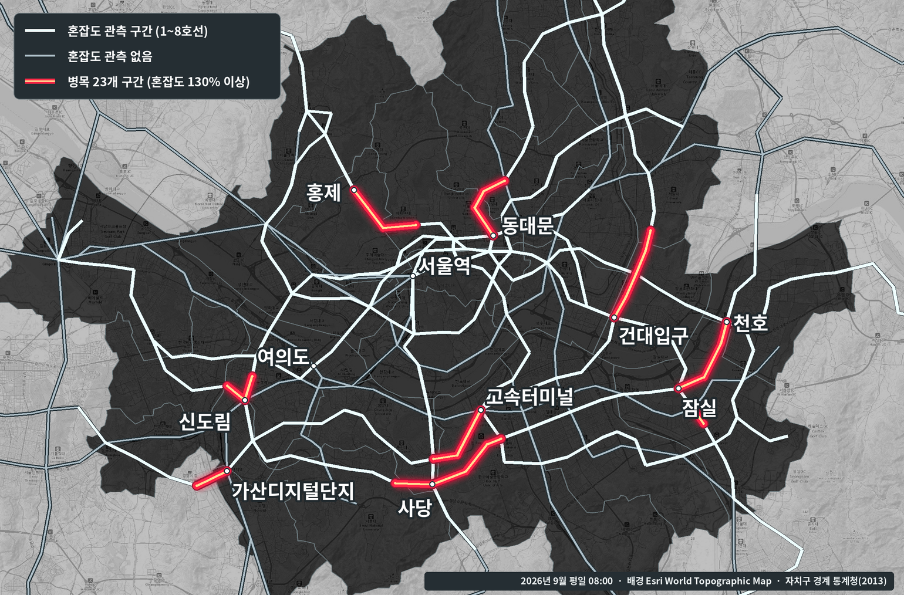
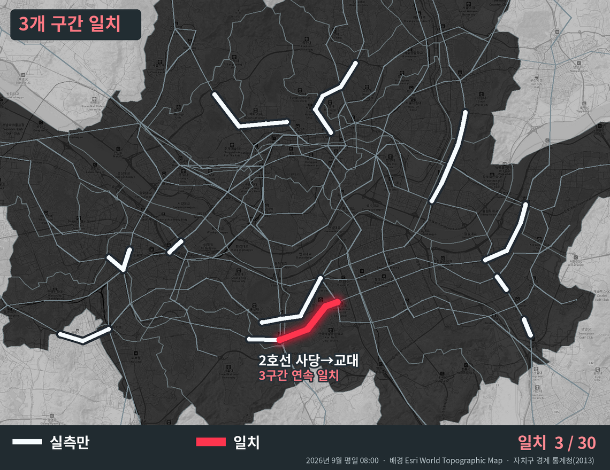
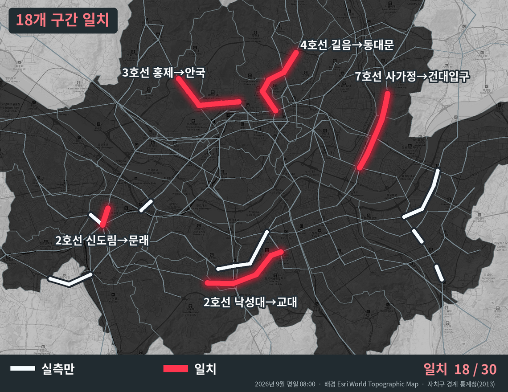
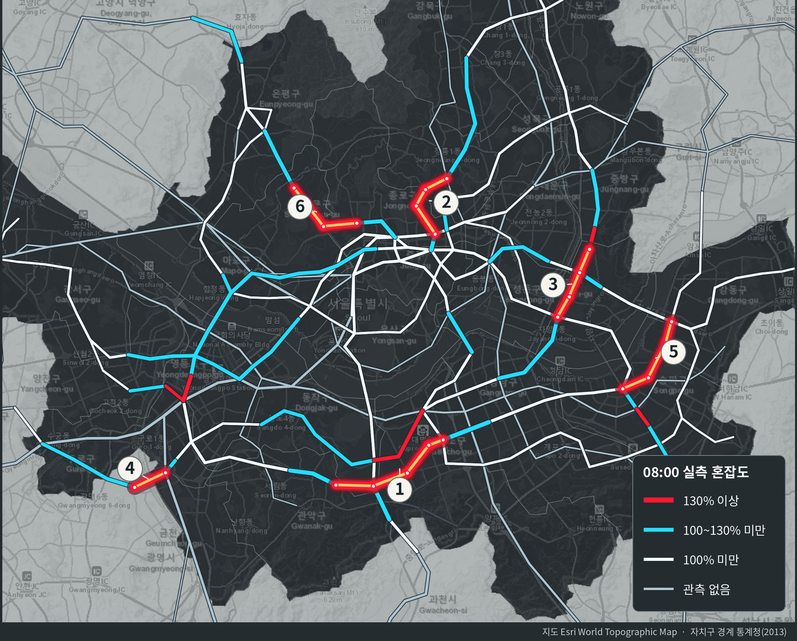
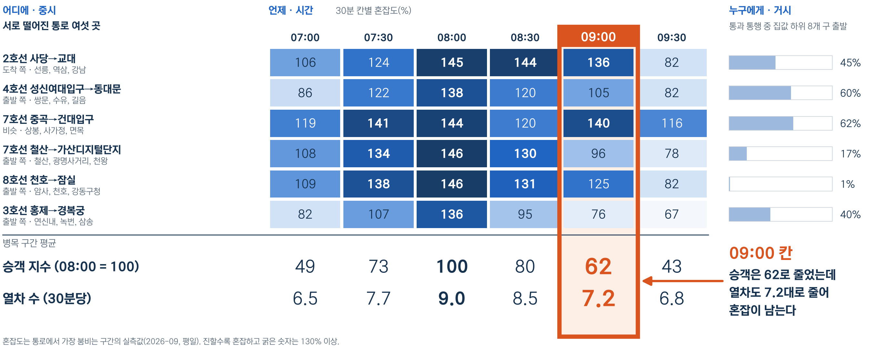
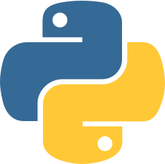
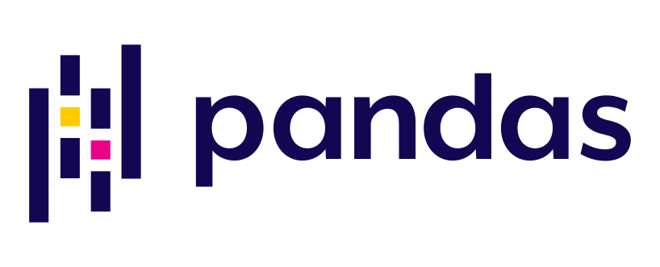
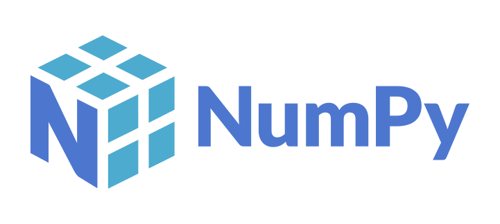
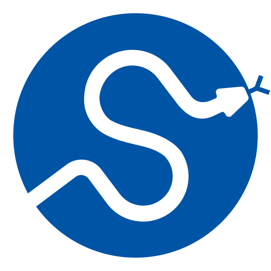

소셜 네트워크 과학 팀 프로젝트
150%를 달성한 뒤에 남은 혼잡
서울 지하철 아침 병목의 네트워크 분석
어디에, 누구에게, 언제 남았는가
팀 이름
발표자 · 팀원 이름
CONTENTS
01
연구 개요
주제 선정 배경
선행연구
문제 제기
연구 목적과 핵심 질문
02
분석 프로세스
순서도
용어와 기준 · 범위와 규모
데이터 선정 및 가공
네트워크 정의
03
분석 결과
어디에: 구조 대 통행, 통로
누구에게: 손잡이, 집값 묶음
언제: 승객 대 열차
04
결론
최종 결과
해결 방향과 솔루션
기대효과 및 한계점
참고자료
01. 연구 개요
주제 선정 배경

(가) 언제: 130% 이상이 몰리는 30분 칸 · (나) 어디에: 08:00 칸에서 130% 이상인 구간. 서울교통공사 혼잡도 2026-09 평일, 역·방향 557개. 130%는 2020년 서울교통공사 안내에서 “주의”(이동 시 부딪힘)가 시작되는 선. 증회: 서울시 「지하철 혼잡도 완화 대책」.
서울시도 이 시간대를 겨냥해 2023-04~2025-03 혼잡 시간대 열차를 5차례 늘림. 목표는 노선별 최고 혼잡도 150% 이하
01. 연구 개요
선행연구
정부 대책: 노선별 최고 혼잡도 구간을 찾아 그 30분 칸에 열차를 더함
① 조사
정기교통량조사
노선마다 30분 칸별
혼잡도 측정
서울교통공사, 분기별
② 진단
노선별 최고 혼잡도
구간 하나
예: 4호선 성신여대입구→한성대입구,
08:00~08:30, 186%
2022년 조사
③ 처방
그 30분 칸에
열차 증회
예비열차 증회 5차례
(2023-04~2025-03),
신규 전동차 증차
2026년 시차 출퇴근 교통비 환급 추가
④ 결과
“150% 수준 유지”
4호선 185.5% → 143.6%
(2025 4분기)
헤럴드경제 2026-03-11
| 정부 판단의 전제 | 혼잡의 원인은 이용자 증가 (예: 진접선 개통 뒤 4호선 162% → 186%) → 열차가 모자람 → 가장 붐비는 30분 칸에 열차를 더하면 된다 |
|---|
출처: 서울시 「지하철 혼잡도 완화 대책」, 서울교통공사 보도(2023-10-06), 헤럴드경제(2026-03-11), 이투데이(2026-04-28). 분석 방법의 착안(학술 선행연구): 구조와 실제 흐름의 비교(Gao 외 2013, Lee 외 2008), 운행망 위에 통행망 겹치기(Feng 외 2017), 혼잡 노출(송예나 외 2019).
정부는 노선별 최고 혼잡도 하나로 진단하고, 그 30분 칸에 열차를 더함
01. 연구 개요
문제 제기
그림 1. 혼잡도별 한 칸 안의 모습

출처: 서울연구원, 서울시 「내 손안에 서울」(2017-03-14). 정원 160명 = 100%, 150% = 한 칸 240명
“출근시간 ‘지옥철’인데 혼잡도는 ‘보통’”
서울신문, 2026-09-02 (서울시의회 교통위원회 지적)
표 1. 노선별 최고 혼잡도 하나로 본 대책이 놓친 것 (평일, 2022-12 → 2026-09)
| 정부가 본 것 | 놓친 것 | 증거 | |
|---|---|---|---|
| 어디에 | 노선별 최고 혼잡도 구간 하나 | 130% 이상 구간이 이어진 통로 | 통로 여섯 곳(16구간) −14%p, 나머지(18구간) −22%p |
| 누구에게 | 노선·역 단위 평균 | 그 통로를 실제로 지나는 출근자 | 평균으로는 보이지 않음 → 분석에서 확인 |
| 언제 | 가장 붐비는 08:00 칸 하나 | 그 뒤 09:00 칸 | 통로 여섯 곳: 08:00 칸 −12%p, 09:00 칸 113 → 114% |
증회 효과는 비교 기준마다 다름. 여기는 통로 구간의 전후 비교(2022-12 → 2026-09, 통로 = 분석 장의 17구간). 증회·미증회 노선 비교는 21장, 4호선 단독 증회는 17장
그림 2. 증회 전후 비교

노선별 최고 혼잡도 하나로는 어디에 · 누구에게 · 언제 혼잡이 남았는지 보이지 않음
01. 연구 개요
연구 목적과 핵심 질문
| 축 | 핵심 질문 | 지금 기준으로는 보이지 않는 것 |
|---|---|---|
| 어디에중시 | 병목은 망의 어디에, 어떤 모양으로 있나 | 노선별 최댓값은 130~150%를 "보통"으로 본다 |
| 누구에게거시 | 누가 그 병목을 지나고, 누가 더 겪나 | 역별 통계로는 지나가는 사람이 보이지 않는다 |
| 언제시간 | 정점이 지난 뒤에도 혼잡은 언제까지 남나 | 증회는 08:00 정점 한 칸만 겨냥한다 |
연구 목적
남은 혼잡의
위치 · 대상 · 시점을
통근 네트워크로 측정
150%를 달성한 뒤에
남은 혼잡이 대상이다
Goal 1 · 결과
세 질문의 답을
한 장으로 모은다
어디에 · 누구에게 · 언제
Goal 2 · 해법
세 축을 함께 푸는
해결 순서를 낸다
열차와 사람, 무엇을 먼저 할지
02. 분석 프로세스
순서도
데이터
몇 명 가나
열차 수
겹치기
지하철
노선도 위에
겹쳐 그린다
분석
열차를 늘려 많이 줄었는데
출근길은 왜 아직 붐빌까?
타는 사람 ÷ 자리자리 = 열차 수 × 열차 정원
몰리나
구간마다 사람 수를 더하고,
붐비는 구간을 이어 묶어
그 승객이 탄 역을 센다
그 길목을 지나나
혼잡도를 평균 내고,
집값 · 드나드는 사람 수와
견준다
몇 대 다니나
타는 사람과 자리(열차 수)로
쪼개고, 열차를 늘린 노선과
안 늘린 노선을 비교한다
02. 분석 프로세스
용어와 기준 · 범위와 규모
용어와 기준
| 용어 | 정의 |
|---|---|
| 혼잡도 | 승객 ÷ (열차 수 × 정원). 100% = 한 칸 160명 |
| 병목 | 평일 08:00 칸(08:00~08:30) 혼잡도 130% 이상 구간. 2026-09 기준 23개 구간 (신도림 갈림 포함, 역 기준 22곳) |
| 병목 통로 | 병목이 이어진 묶음. 6개 |
| 병목의 손잡이 | 통로를 지나는 통행의 출발역·도착역 중 더 몰린 쪽 |
| 평균 혼잡도(노출) | 출근자가 지나는 구간의 혼잡도를 통과 시간으로 가중 평균 |
| 유입/유출 비 | 아침에 그 구로 들어오는 통행 ÷ 나가는 통행 |
| 과밀 분 | 구간마다 통과 시간(분) × max(혼잡도 − 100, 0) / 100의 합 |
| 순효과 | 옮겨 나온 칸과 옮겨 간 칸을 합친 과밀 변화 |
계산의 바탕: 승객 ∝ 혼잡도 × 열차 수
범위와 규모
시간
평일 07:00~09:30
30분 칸 6개 · 기준 08:00
13개 시점 · 통행 추정은 07~10시 승하차
공간
수도권 21개 노선
역 619개
혼잡도는 1~8호선
규모
아침 통행 214만 건
구간 1,466개
관측 구간 526개
혼잡도·열차 수 모두 있는 구간

02. 분석 프로세스
데이터 선정 및 가공
데이터 수집
1. 운행망
- 1~9호선 역·구간·운행 시간
- 그 밖 12개 노선 역 순서·좌표
2. 역별 OD (2026-09-30)
- 역쌍별 하루 통행 738만 건
- 시간대 구분 없음
3. 시간대별 승하차 (OA-12252)
- 역별 월 합계, 2026-09
- 07~10시(07·08·09시대) 승차·하차
4. 혼잡도 (OA-12928)
- 역 × 방향 × 30분, 평일
- 13개 시점 (2021-12 ~ 2026-09)
5. 시각표 (2026-09-01)
- 1~9호선 열차별 역 통과 시각
6. 아파트 실거래가 (국토부 API)
- 서울 25개 구, 2026-04~06, 23,703건
가공 과정
아파트 실거래가 → 구별 집값 묶음(하위 8 · 중간 9 · 상위 8) → “누구에게” 분석에 사용
02. 분석 프로세스
네트워크 정의: 같은 역 위 두 겹의 망
아침 출근 시간(07~10시)만 · 수도권 21개 노선
| 운행망 아래층 | 통행망 위층 | 겹친 결과 구간 부하 | |
|---|---|---|---|
| 노드 | 역 619곳 | 같은 역 619곳 | 같은 역 |
| 엣지 | 선로 구간 1,466개 환승 330개 | 역쌍 사이의 아침 이동 | 선로 구간 1,466개 |
| 가중치 | 걸리는 시간 | 사람 수 합 214만 건 | 지나는 사람 수 |
| 종류 | 방향 · 가중 네트워크 | 방향 · 가중 네트워크 | 위층을 아래층의 가장 빠른 길에 얹음 |
계산할 때는 환승 시간을 넣기 위해 역을 노선별 노드 756개로 나누고 승차 노드와 하차 노드를 붙였다. 이 그래프는 노드 1,994개(756 + 619 + 619), 엣지 3,308개(구간 1,466 + 환승 330 + 승하차 연결 1,512)다.
오른쪽은 모식도다. 실제 노선 모양과 수치가 아니다.
02. 분석 프로세스
degree 분포: 선로는 고르고, 사람은 몰림

CCDF: 값이 x 이상인 역의 비율 · 가로 = 값 ÷ 평균(로그 눈금)
78%
역이 degree 2 (지니 0.15)
같은 평균의 무작위 망(ER): 26.5%
34%
상위 10% 역의 승차 비중
(가중 outdegree, 지니 0.50)
48%
상위 10% 역의 하차 비중
(가중 indegree, 지니 0.62)
03. 분석 결과
과정 ①: 구간마다 사람 수 세기
예시: 4호선 쌍문 → 충무로 · 214만 건 모두 같은 계산
왜 쌍문: 4호선 병목 통로 승객의 최다 출발역(10,174명) · 환승 없이 통로 3구간 모두 통과
STEP 1 · 아침 몫 추정
하루 통행 → 아침 통행
역쌍 OD = 하루 합계뿐
역별 07~10시 승·하차 총량에 맞춰 조정
IPF반복 비례 조정: 출발역 합계 · 도착역 합계를 번갈아 맞춤(200회)
쓴 이유: 시간대별 역쌍 OD 공개 자료 없음
964→512명
쌍문 → 충무로 · 하루 → 아침
STEP 2 · 가장 빠른 길
최단 경로 선택
가중치 = 구간 · 환승 시간
Dijkstra출발역에서 가까운 역부터 최단 시간을 차례로 확정하는 최단 경로 알고리즘
쓴 이유: 승객 = 가장 빠른 길 선택 가정
4호선 10정거장 · 22.5분 · 환승 없음
STEP 3 · 구간에 합산
지나는 구간마다 더하기
512명 → 길 위 10개 구간에 가산
214만 건 합 = 구간 부하
81,703명
한성대입구 → 혜화 아침 부하 · 08:00 실측 138%
부하 ÷ 자리 ↔ 실측 혼잡도 순위상관 0.86 (관측 구간 526개)
가정 모든 승객 = 가장 빠른 길 이용 · 환승 5분 · 아침 통행 = 하루 OD에서 추정한 값 · 열차 정원 제약 없이 배정
03. 분석 결과
병목 위치: 노선 모양이 아닌 사람의 이동
3/30곳
노선 모양만 (매개 중심성)
18/30곳
실제 이동을 얹은 사람 수 (구간 부하)


흰 선 = 실측 상위 30구간 중 놓친 곳 · 빨간 선 = 방법과 실측이 겹친 구간 · 2026-09 평일 08:00, 관측 구간 526개
차이 = Xod(o→d 아침 이동 사람 수) 하나
대조 망 (null model)
보존: 역별 승·하차 수(가중 degree)
섞음: 행선지(거리로만 재배분)
→ 구간별 사람 수가 실제와 순위상관 0.98
순위상관 1 = 구간 순서 완전 일치 · 1,466구간
병목 위치 = 역별 승·하차 수가 결정
연결 구조 ✕ · 노선 모양만으론 30곳 중 3곳
03. 분석 결과
서로 떨어진 병목 통로 6곳

08:00 실측 130% 이상
connected_components
+ 최고 혼잡 단독 1곳
표기: 08:00 혼잡도 · 열차 수(30분당) · 가장 큰 덩어리도 4구간 · 용마산 → 중곡(130.0%)은 문턱 경계라 제외
130% 병목 = 서로 떨어진 6곳의 국지적 문제
03. 분석 결과
병목의 손잡이: 통로마다 다른 몰림 방향

통로 6곳 전체: 통로 승객 중 상위 5개 역이 차지하는 비중(%)
손잡이 = 통로 승객이 더 몰린 쪽의 상위 5개 역
통로 통과 역쌍 → 출발역별 · 도착역별 합산 → 한쪽이 반대쪽의 1.15배 초과 쪽
손잡이 = 타는 역 · 쌍문 · 수유 · 길음 · 미아사거리 · 상계
통로 승객 85,842명 기준
손잡이 = 내리는 역 · 선릉 · 역삼 · 강남 · 삼성 · 교대
같은 130%, 정반대의 손댈 곳
4호선 = 타는 동네 · 2호선 = 내리는 직장가
병목 22구간: 승차 쏠림 14 · 하차 쏠림 6 · 비슷 2 · 기준을 바꿔도 겨냥 효과 2.1배(고르게 옮길 때 대비) 유지
03. 분석 결과
아침에 빠져나가는 구의 출근자 = 더 붐비는 출근길
구별 노출 = 그 구 출근자가 지나는 구간의 혼잡도 평균
통과 인원 × 통과 시간 가중 · 사는 역 ✕ 지나는 길 ○
−0.81
유입/유출 비와 순위상관
(서울 25개 구) · 집값 빼도 −0.76
91:67%
집값 하위 8구 : 상위 8구
(집값과 −0.67, p 0.0003)
혼잡은 사는 곳이 아닌 지나는 길에
해석집값 = 아침에 나가는 구의 표지
03. 분석 결과
09시까지 이어지는 정원 초과: 승객과 함께 줄어든 열차

병목 구간 평균 · 08:00 = 100으로 둔 승객 지수와 30분당 열차 수 · 혼잡도 = 타는 사람 ÷ (열차 수 × 정원)
119→84%
09:00 정원 초과 23구간 평균
열차를 08:00 수준으로 유지 시
※ 23구간 = 09:00 칸 혼잡도가 100% 이상인 구간.
병목 23구간(08:00 칸 130% 이상)과는 기준이 다른 집합이다.
84%는 이 구간들에 08:00 칸의 열차 수를 그대로 둔 계산값이다.
09시 혼잡 = 시간표의 몫
승객은 줄어도 열차가 함께 줄어 정원 초과 지속
대조군 2024 상반기 4호선만 증회: 08:00 칸 −24.6%p(다른 노선 −0.5%p) · 같은 통로 09:00 칸 105 → 103%
04. 결론 · 최종 결과
남은 혼잡은 통로 여섯 곳, 아침에 나가는 구의 출근자, 09시 시간표에 있다

그림 2. 행은 통로(어디에), 열은 30분 칸(언제), 오른쪽 막대는 그 통로를 지나는 통행의 출발지(누구에게).
정책 질문: 노선별 최고 혼잡도 하나로 관리하면 충분한가
충분하지 않다. 최고 혼잡도는 이 그림의 한 칸만 본다.
04. 결론 · 해결 방향
통로를 골라, 손잡이 쪽 사람을, 열차가 남아 있는 칸으로 옮겨야 한다
| 축 | 질문의 답 (앞 장) | 기존 해법이 닿지 못한 곳 |
|---|---|---|
| 어디에중시 | 혼잡은 서로 떨어진 통로 여섯 곳에 있다 | 증회는 노선 단위, 시차 출근 환급은 노선을 가리지 않는다 |
| 누구에게거시 | 병목 구간마다 손잡이(좁은 쪽)가 다르다22곳 중 출발 쪽 14, 도착 쪽 6, 비슷 2 | 시차 출근 환급은 역을 가리지 않고 똑같이 준다 |
| 언제시간 | 09:00에 승객보다 열차가 먼저 빠진다 | 증회는 08:00 정점 한 칸에만 넣었다09:00 칸은 −0.4%p |
해법이 갖춰야 할 조건
통로를 골라서
손잡이 쪽 사람을
열차가 남아 있는 칸으로
솔루션 1 · 열차 (어디에 + 언제)
통로의 09:00 열차
감축을 늦춘다
받는 칸을 먼저 연다.
30분당 평균 2.1대
솔루션 2 · 사람 (어디에 + 누구에게)
통로마다 손잡이 역
이용자를 옮긴다
그다음에 사람을 옮긴다.
고르게 옮길 때의 2.1배
08:00 칸과 09:00 칸의 과밀 분 합계 변화. 통로 6곳 기준이고, 손잡이 역 이용자의 15%가 09:00으로 옮긴다는 가정이다 (해외 실적 1.5~8%).
04. 결론 · 솔루션 1
솔루션 1: 병목 통로에서 09:00 열차 감축을 30분 늦춘다
표 3. 기존 증회와 솔루션 1의 차이
| 기존 정책 (증회) | 솔루션 1 | |
|---|---|---|
| 어디에 | 노선마다 가장 붐비는 구간 하나 | 병목 통로 6곳구간 17개. 노선 전체가 아니다 |
| 언제 | 08:00 정점 한 칸 | 09:00 칸08:00 칸의 열차 수를 09:00 칸까지 유지 |
| 누구에게 | 구분하지 않는다 | 09:00에 통로를 지나는 승객솔루션 2로 옮겨 올 사람을 받는 칸이 된다 |
| 수단 | 예비열차 증회, 신규 전동차 증차 | 운행 중인 열차의 감축 시각 변경30분당 평균 2.1대. 새 전동차는 필요 없다 |
| 효과 | 08:00 칸 −8.0%p, 09:00 칸 −0.4%p증회 노선의 실측 | 08:00·09:00 칸 과밀 −8%모형 계산. 09:00 정원 초과 23개 구간 평균 119% → 84% |
※ "감축을 30분 늦춘다"는 08:00 칸의 열차 수를 09:00 칸까지 유지하는 것으로 계산했다.
※ 09:00 정원 초과 23개 구간은 09:00 칸 100% 이상인 구간이다. 병목 23구간(08:00 칸 130% 이상)과는 기준이 다르다.
※ 증회 효과는 2022-12 → 2023-12 비교다. 증회하지 않은 노선은 08:00 칸 +1.7%p, 09:00 칸 +2.2%p였다.
표 4. 통로에서 가장 붐비는 구간의 30분당 열차 수
| 구간 | 08:00 | 09:00 지금 | 09:00 솔루션 1 |
|---|---|---|---|
| 7호선 군자 → 어린이대공원 | 10 | 7 | 10 |
| 4호선 한성대입구 → 혜화 | 10 | 7 | 10 |
| 8호선 강동구청 → 몽촌토성 | 7 | 5 | 7 |
선행연구와 달라진 점
교통망 연구는 구조와 흐름으로
병목의 위치를 찾았다.
본 연구는 흐름을 열차 수로 나눠
30분 칸마다 봤고, 그래서 처방이
"어느 칸의 열차인가"까지 내려간다.
Gao 외(2013), Feng 외(2017), 송예나 외(2019).
찾은 범위에서 열차 감축 시각을 다룬 연구는 없었다.
새 전동차를 들이는 일이 아니라, 운행 중인 열차의 감축 시각을 바꾸는 일이다.
04. 결론 · 솔루션 2
솔루션 2: 통로마다 손잡이 역의 이용자에게 시차 출근을 권한다
표 5. 기존 시차 출근 정책과 솔루션 2의 차이
| 기존 정책 (시차 출근 환급) | 솔루션 2 | |
|---|---|---|
| 어디에 | 지역과 노선을 가리지 않는다 | 병목 통로 6곳을 지나는 통행통로를 지나지 않는 통행은 옮겨도 효과가 없다 |
| 누구에게 | 이용자 누구나 같은 추가 환급 | 통로마다 손잡이(좁은 쪽 상위 5개 역) 이용자2호선은 내리는 역, 4호선은 타는 역이다 |
| 언제 | 09:00~10:00 등 지정 시간대에 탈 때그 시간대의 열차 수는 다루지 않는다 | 08:00 칸에서 09:00 칸으로솔루션 1로 열차를 유지한 칸이다 |
| 수단 | 환급률 30%p 추가 | 같은 권고와 인센티브를 대상 역에 집중새 제도가 아니라 대상을 좁히는 일이다 |
| 효과 | 08:00 칸 과밀 −13.2%같은 인원을 모든 역에서 고르게 옮길 때 | 08:00 칸 과밀 −27.5%, 2.1배모형 계산. 아침 통행의 2.48%를 옮길 때 |
기존 정책: 모두의 카드(K-패스) 시차 출퇴근 환급률 확대 (2026-04-01 시행).
오전 적용 시간은 05:30~06:30과 09:00~10:00이다. 출처: 서울시 「내 손안에 서울」.
표 6. 통로별로 권하는 대상
| 통로 | 좁은 쪽 | 손잡이 (상위 5개 역) |
|---|---|---|
| 2호선 사당 → 교대 | 도착 | 선릉, 역삼, 강남, 삼성, 교대 |
| 4호선 성신여대입구 → 동대문 | 출발 | 쌍문, 수유, 길음, 미아사거리, 상계 |
| 7호선 중곡 → 건대입구 | 비슷 | 상봉, 사가정, 면목, 군자, 하계 |
| 7호선 철산 → 가산디지털단지 | 출발 | 철산, 광명사거리, 천왕, 온수, 신중동 |
| 8호선 천호 → 잠실 | 출발 | 암사, 천호, 강동구청, 암사역사공원, 몽촌토성 |
| 3호선 홍제 → 경복궁 | 출발 | 연신내, 녹번, 삼송, 홍제, 구파발 |
선행연구와 달라진 점
혼잡 노출 연구는 누가 더 겪는지를
사는 곳 기준으로 봤다.
본 연구는 지나는 길 기준으로 봤고,
그래서 통로마다 권할 역을 짚을 수 있다.
송예나 외(2019). 대상 역은 통로를 지나는 역쌍을 출발역별, 도착역별로 더해 정했다.
지금 열차로는 09:00 칸까지 합친 순효과가 −11%에 그친다. 솔루션 1과 함께 써야 −25%가 된다.
04. 결론 · 기대효과 및 한계점
두 솔루션을 함께 쓰면 과밀이 25% 줄고, 새 전동차 없이 할 수 있다
그림 3. 세 축이 겹치는 곳과 기대효과
표 7. 축마다 솔루션이 바꾸는 것
| 축 | 솔루션이 바꾸는 것 | 기대효과 |
|---|---|---|
| 어디에 | 솔루션 1 · 2 공통병목 통로 6곳에만 적용한다 | 새 전동차 없음 |
| 누구에게 | 솔루션 2 · 사람손잡이 역 이용자를 옮긴다 | −11% |
| 언제 | 솔루션 1 · 열차09:00 칸까지 열차 수를 유지한다 | −8% |
| 세 축 함께 | 해결 순서받는 칸을 먼저 열고, 사람을 옮긴다 | −25% |
한계점
- 자료
- 아침 통행은 하루치 OD에서 추정했다.
9호선, 신분당선, 코레일 구간은 혼잡도 자료가 없다. - 가정
- 15% 이동은 가정이고 해외 실적은 1.5~8%다. 감축을 늦추는 비용은 계산하지 않았다.
- 범위
- 09:00에 정원을 넘는 통로는 여섯 곳 중 네 곳이다.
- 일반화
- 구간별 혼잡도, OD, 시간표만 있으면 다른 노선과 도시에도 같은 순서로 적용할 수 있다.
08:00 칸과 09:00 칸의 과밀 분 합계 변화, 모형 계산. 통로 6곳 기준, 손잡이 역 이용자의 15% 이동 가정. 이동 비율 30%면 −31%, 전 구간 열차 유지면 −32%.
정책 질문의 답: 최고 혼잡도 하나가 아니라 어디에 · 누구에게 · 언제를 함께 봐야 남은 혼잡이 풀린다.
04. 결론
참고자료
데이터
| 자료 | 출처 | 기준 시점 · 쓰임 |
|---|---|---|
| 지하철 혼잡도 정보 (OA-12928) | 서울 열린데이터광장 서울교통공사 | 평일 30분 단위, 2021-12 ~ 2026-09의 13개 시점 · 병목과 시간 변화 |
| 호선별 역별 시간대별 승하차 인원 (OA-12252) | 서울 열린데이터광장 | 2026-09, 07~10시 · 아침 통행 추정 |
| 지하철 역별 OD | 서울시 제공 자료 | 2026-09-30 하루 738만 건 · 통행망 |
| 도시철도 열차 시각표 | 공공데이터포털 | 2026-09-01 · 운행 시간과 30분당 열차 수 |
| 역 · 노선 정보와 좌표 (OA-21232) | 서울 열린데이터광장 서울교통공사 노선 정보 | 수도권 21개 노선, 역 619곳 · 운행망 |
| 아파트 매매 실거래가 | 국토교통부 실거래가 API | 서울 25개 구, 2026-04 ~ 06, 23,703건 · 집값 묶음 |
| 열차운행현황 (OA-13318), 실시간 열차 위치 | 서울 열린데이터광장 | 열차 수 검증용 |
분석툴




최단 경로와 컴포넌트는 SciPy(csgraph), 순위상관은 SciPy(stats)로 계산했다.
재현 노트북: SNS_지하철_병목_전체_1124_v4.ipynb
선행연구
- Lee, Jung, Park, Choi (2008). Statistical Analysis of the Metropolitan Seoul Subway System: Network Structure and Passenger Flows.
- Gao 외 (2013). Understanding Urban Traffic-Flow Characteristics: A Rethinking of Betweenness Centrality.
- Feng 외 (2017). Weighted complex network analysis of the Beijing subway system: Train and passenger flows.
- 이정원 · 이강원 (2017). 네트워크 중심성 지표를 이용한 서울 수도권 지하철망 특성 분석.
- 송예나 · 이금숙 · 장한울 (2019). 서울시 지하철 네트워크의 접근성과 공간적 형평성.
정책 · 보도 자료
- 서울시, 「지하철 혼잡도 완화 대책」. 증회 5차례 (2023-04 ~ 2025-03).
- 서울교통공사 보도자료 (2023-10-06). 2022년 정기교통량조사 혼잡도.
- 헤럴드경제 (2026-03-11). 4호선 최대 혼잡도 143.6%.
- 이투데이 (2026-04-28). 시차 출퇴근 교통비 환급.
- 서울신문 (2026-09-02). 서울시의회 교통위원회 지적.
- 서울시 「내 손안에 서울」 (2017-03-14, 2026). 혼잡도별 칸 안 모습, 모두의 카드 시차 출퇴근 환급률 확대.